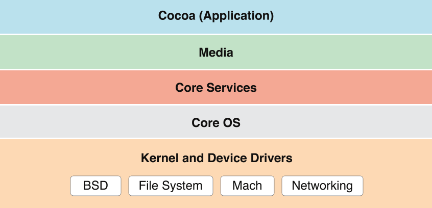
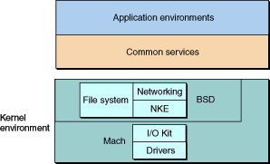
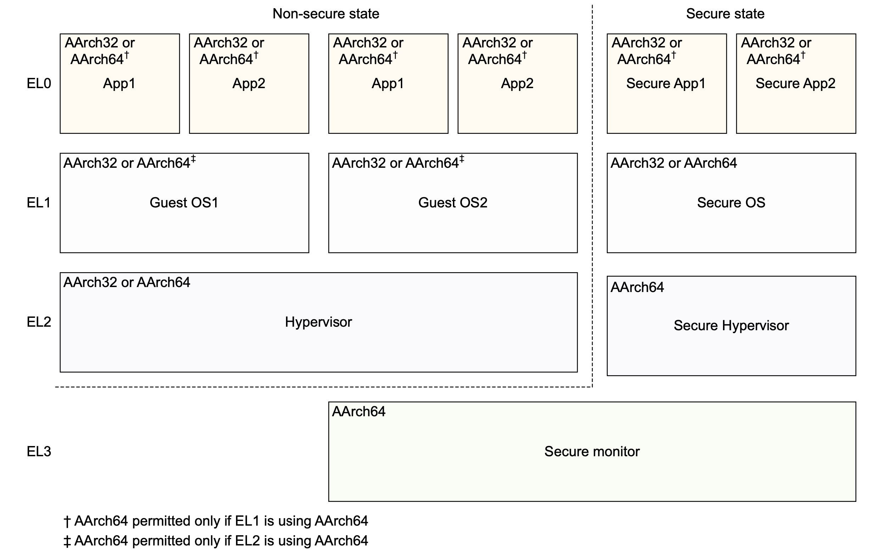
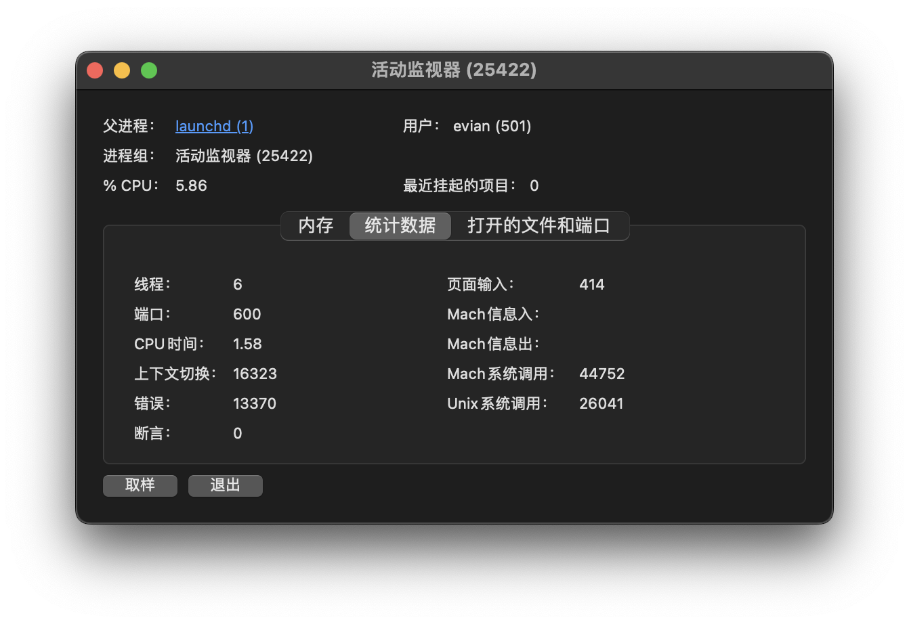
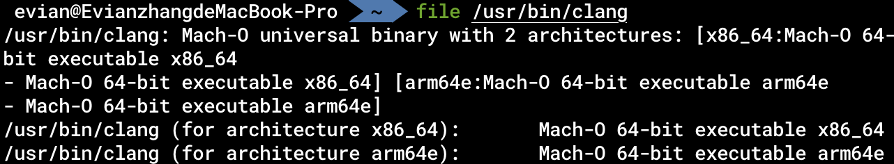
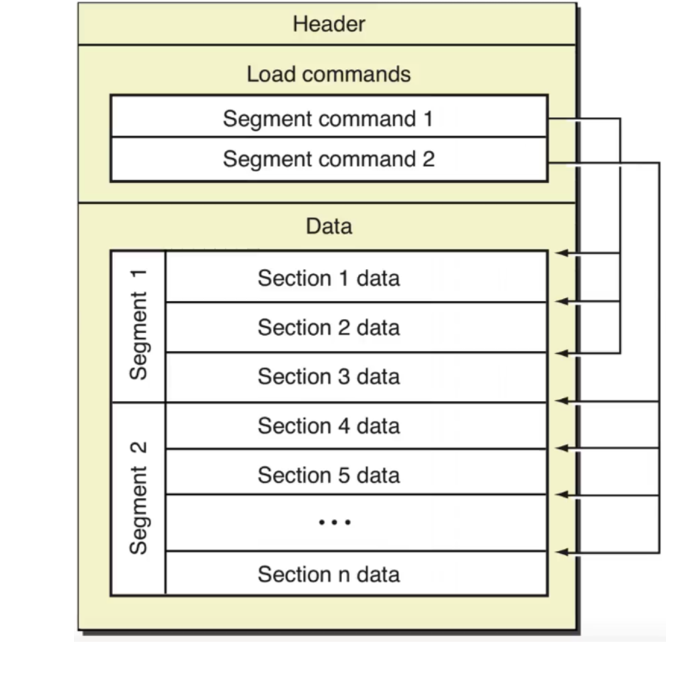
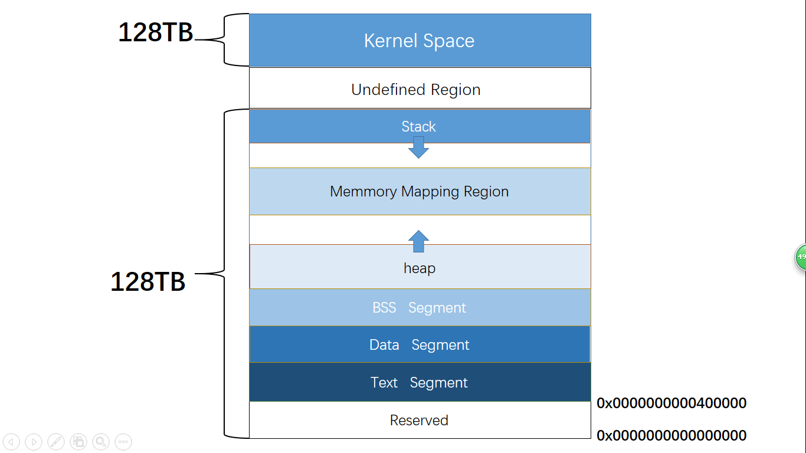
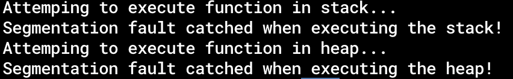
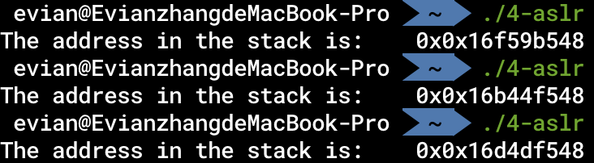

操作系统
当我们学习汇编的时候，除了数学基础以及硬件基础以外，操作系统的基础也是一个至关重要的环节。汇编语言本质上就是机器码的human-readable的版本，而硬件相同，则同一个程序的机器码一定相同。那么我们为什么还要研究操作系统呢？这是因为，我们通过汇编语言，最终得到的可执行文件是与操作系统有关的，是操作系统来决定我们如何装载、执行这些可执行文件。此外，不同操作系统提供的库、系统调用并不完全相同。因此，只有了解了操作系统以后，才能更好地编写汇编语言。
Darwin与XNU
macOS的基本架构如下：

macOS建立在Darwin操作系统之上，以Aqua为图形化界面。Darwin操作系统的内核是XNU. 我们可以通过在终端下键入
uname -a
来查看Darwin和XNU的版本号。我在macOS 下的结果如下：
XNU是开源的，Aqua图形化界面是在Apple专利下的。
简单来讲就是，我们用的macOS里各种图案、交互都是Apple专利下的，而系统的运行、内存的分配等等底层的操作系统都是开源的。事实上，国外也有社区在提供基于Darwin操作系统的开源的系统，如PureDarwin.
接下来，我们重点关注的是Darwin操作系统的内核——XNU.
正如上面macOS的基本结构的图中所示，XNU位于macOS的最底层——Kernel and Device Drivers. 下面这张高糊的图在Apple的官方文档中用于描述macOS内核架构：

总的来说，XNU是一个混合型内核，其最重要的三个部分为Mach, BSD以及IOKit。
操作系统内核
从高层应用开发者的角度来看，操作系统内核就是提供了许多核心功能，如进程管理、文件系统等功能的一个“黑盒子”。那么从底层来看，操作系统内核究竟代表什么呢？
特权级
从底层的角度来看，内核态与用户态的一大区别就是，一些用户态不被允许执行的指令、不被允许访问的内存地址，可以在内核态去执行、访问。CPU是如何实现这个功能的呢？这就要提到特权级的概念。
在ARM中，特权级被称作异常级别（Exception Level）。一般来说，存在一个寄存器存储当前的异常级别。当CPU进行指令执行、内存访问等操作时，会检查当前的异常级别，如果相应的指令、内存允许当前的异常级别，则继续正常执行。内核的异常级别比用户态高，从而也就实现了内核相对用户态的特权。
在AArch64架构下，有四种异常级别：
-
EL0
普通应用处于此异常级别
-
EL1
操作系统内核和相关的函数处于此异常级别
-
EL2
虚拟机监视器（Hypervisor）处于此异常级别
-
EL3
安全监视器（Secure monitor）处于此异常级别
在ARM官方文档中的这张图片可以比较直观地展示四种异常级别：

一般来说，由用户态程序进入内核态等特权级别提升的行为都是通过发出异常来实现的，也许是因为这种原因，特权级别在ARM中才被称作异常级别。在AArch64架构下，只能由低异常级别发起一个异常，希望切换到高异常级别；异常返回后，从高异常级别切换回低异常级别。
在Apple Silicon中，对于权限的管理也采用了额外的机制，具体可以参考Apple Silicon Hardware Secrets: SPRR and Guarded Exception Levels (GXF)这篇博客。
系统调用
我们刚刚提到，用户态可以通过发起异常的方式主动进入内核态。那么具体而言，用户态与内核态是如何交互的呢？
我们知道，操作系统内核拥有许多特权功能，例如分配内存、创建文件等。用户态的程序可以通过「系统调用」（System Call）的方式请求操作系统执行这些功能。所谓的系统调用，实际上就是特殊的机器指令（如svc等）。从某种意义上来说，操作系统就和我们在高级编程中使用的Cocoa, React等一样，是一种「框架」(Framework)。我们在编程的时候，可以直接使用框架提供的API. 同样地，我们在编写汇编程序的时候，也可以直接使用操作系统提供的系统调用。就像是我们在用毛线织衣服的时候，并不需要自己来养蚕缫丝，只需要在毛线不够的时候向毛线的提供者说一句，然后就由毛线的提供者工作来提供毛线。关于系统调用的具体使用方式，我们之后在汇编语言中还会详细阐释。
这一章我们重点是从操作系统层面了解一些与汇编有关的底层知识，因此，我们可以简单了解一下XNU是怎么实现系统调用的。
当用户通过svc等特殊的机器指令，在用户态发起系统调用后，CPU会切换成EL1级别，从而进入内核态。XNU内核会根据svc号判断用户希望进行的是Mach系统调用还是Unix系统调用（由于XNU是由BSD和Mach两种内核组成，所以才会分为两种系统调用。这也是使用「活动监视器」App查看进程统计数据时有「Mach系统调用」和「Unix系统调用」的原因）：

对于Unix系统调用来说，内核的内存空间中存在一张「系统调用表」。内核使用这张系统调用表，根据用户提供的系统调用号，查询相应的系统调用处理函数，完成系统调用。
对于源码爱好者来说，XNU内核处理系统调用的主要过程包括：
-
osfmk/arm64/sleh.c文件中handle_svc函数获得svc号。如果小于0，则为Mach系统调用，否则为Unix系统调用
-
bsd/dev/arm/systemcalls.c文件中unix_syscall函数- 获得Unix系统调用号
- 访问系统调用表
sysent，其由bsd/kern/syscalls.master文件生成 - 使用
callp->sy_call进行系统调用
所以说，在系统调用过程中，「系统调用表」是很关键的一环。对于大部分面向内核的恶意软件Rootkit，一般都是修改内核内存中的这张系统调用表，从而能够劫持用户的系统调用，使其执行自己想要执行的恶意逻辑。当然，现代的内核也对系统调用表有一定的保护机制，例如，系统调用表所在的内存页是只读的，不可修改。攻击者也可以通过某些手段，修改相应内存页的访问权限。此外，系统调用表也可以不导出到符号表中，从而攻击者不能直接得到系统调用表所在的地址。
内存虚拟化
操作系统内核负责的另一个非常重要的事，就是管理内存。
在「硬件基础」中，我们提到，所有进程都是在内存中运行的。现在常用的操作系统都采用了一个策略「内存虚拟化」，将逻辑地址与物理地址进行区分。我们知道，内存中的存储单元是以字节编址的，相邻的存储单元的地址相邻。这里实际指的是「物理地址」，也就是CPU在向内存发出访问请求时用到的地址。我们在编程中，遇到的地址都是「逻辑地址」。在一个进程启动时，操作系统会为每个进程分配64位逻辑地址空间，并在MMU(Memory Management Unit, 内存管理单元)中维护一个逻辑地址向物理地址的映射。也就是说，在我们编程时，物理地址对于程序员是透明的，程序员接触到的只会是逻辑地址。更具体地说，操作系统将地址分为4KiB, 也就是4096B大小的页(Page), 将逻辑地址的页与物理地址的页进行映射。在一个页内相邻的逻辑地址对应的物理地址是相邻的，但是页之间的物理地址的关系是不确定的。
64位逻辑地址空间，有多大呢？大约是18EB. EB是一种和KB, GB一样的单位，1EB是10的18次方字节。而据估算，2011年整个互联网的容量总和不超过525EB。因此，64位逻辑地址空间是非常非常大的，其总的大小远远大于实际的物理内存的大小。macOS为了解决这个问题，将一部分逻辑地址对应的页储存在硬盘上，准确地说，是/boot目录内。也就是说，当MMU在用逻辑地址向物理地址转化时，发现该逻辑地址在内存中没有对应物理地址，则将/boot目录内一部分数据调入内存中，作为那部分逻辑地址对应的存储空间。
我们可以注意到，事实上，操作系统在操作内存时，一般最小的单元都是一个内存页。无论是页的换入换出，还是内存访问权限的控制，都是以内存页为单位的。
Mach-O文件结构
对于任何一个在macOS上的可执行文件，我们可以用file命令行工具检查它的格式：

由此可知，在macOS上的可执行文件，都是Mach-O格式的文件。
关于Mach-O文件，详细可参考Apple官方文档Mach-O Programming Topics. 这里我们只是简单介绍一下。

如图所示，Mach-O文件由头(Header)、装载指令(Load commands)和数据(Data)组成。我们可以通过MachOView软件进行查看。其中，最重要的组成部分就是Data.
我们可以从图中看到，Data可以分为多个段(Segment), 每个段又可以分为多个节(Section). 从逻辑角度来看，每个段内的节存储的数据都有类似的目的。如__TEXT段内存储的有汇编源代码、字符串等，__DATA段内存储非常量初始化变量等。从内存管理角度来看，每个段的大小被要求是页大小的倍数，也就是4096B的倍数。当程序加载时，就可以正好将一个段加载到一个页内。
进程内存
在操作系统的内存虚拟化一节我们讲到，每一个用户态进程都有一个完成的虚拟内存空间。在这个独立的虚拟内存空间中，也有一些我们需要注意和掌握的知识。
进程空间布局
当我们启动一个进程时，它的虚拟内存空间中的布局是怎样的呢？下图是我在网上顺手找的一张Linux系统上的进程空间（我实在找不到准确的macOS的进程空间布局的图了），我们可以借助这张图帮助我们理解。

-
内核空间
内核所在的物理页，会在每个进程启动时，映射到该进程的高地址空间中。
-
二进制可执行程序映射的空间
操作系统会将我们的二进制可执行程序，也就是Mach-O格式的文件中的一部分内容，加载到内存中。包括程序的代码段（存储程序的所有指令）、数据段（全局变量等）等区域。
-
栈和堆
操作系统会在内存中开辟两块区域：栈和堆。栈位于较高的地址空间中，由上向下增长，一般用于存储局部变量。堆区域一般用于存储运行时动态分配的变量。
上述概念看上去晦涩难懂，这是由于我们并没有真正接触汇编语言导致的。不过不用担心，在之后的章节中，会有对这些信息更详细的介绍。
内存页的访问控制
我们之前提到，操作系统对于内存的访问控制的最小控制单元是一个内存页。那么，在我们普通的用户态程序开发过程中，这一权限控制具体有什么影响呢？
内存页的访问控制往往是为了安全。当攻击者攻击一个程序的时候，有时候会需要程序执行攻击者自己编写的代码。因此，攻击者有时会利用程序使用scanf、fscanf等函数读取外界输入时，将自己的恶意载荷注入到进程中。程序读取外界输入后，往往会存储在堆区或者栈区。因此，攻击者的恶意载荷也会存储在堆区或者栈区。
鉴于此，操作系统的做法就是将堆区和栈区所在的内存页的访问权限标记为不可执行。因此，即使攻击者将自己的代码注入到了进程空间中，也无法进一步地执行相应代码。
我们可以实际操作来感受一下这种访问控制。在codes/4-memory-access.c文件中，我们分别试图执行一个指向栈上的函数指针，和一个指向堆上的函数指针。编译并运行它，输出如下：

可见，确实无法执行栈上和堆上的数据。这种保护也被称作数据执行保护（Data Execution Protection, DEP）。
ASLR
攻击者如果想要攻击一个程序，一般来说第一步就是需要知道被攻击的代码或者数据所处的地址。那么，安全人员就希望从源头遏制这种攻击。因此，ASLR的概念就引入了。
从Mac OS X 10.5开始，Apple引入了地址空间配置随机加载(ASLR)机制。在每次程序执行的过程中，程序在内存中的开始地址，堆、栈、库的基地址都会随机化，这样可以更好地保护不受攻击者攻击。
我们知道，在C语言中，局部变量是在栈上分配的。那么，我们有如下C语言程序：
int main() {
int a = 0;
printf("The address in the stack is:\t0x%p\n", &a);
return 0;
}
编译后运行三次：

我们可以发现，每次运行时，a的逻辑地址都不同，似乎是一个随机值加上一个固定的偏移量。
这就是ASLR的作用。由于每次运行时的地址不同，所以攻击者难以直接通过地址进行恶意行为。
PIE
ASLR的主要作用是随机化了栈和堆的基地址。那么，对于Mach-O二进制可执行文件映射到内存的部分呢？对于这一部分，要想随机化它们的地址实际上有一定的难度。在之后的汇编语言学习中我们会了解到，对于全局变量的访问、对于函数的跳转等等，原本大部分都需要实际的绝对地址。因此，一些十分聪明的前人提出了一些方案，在编译器层面做了一些改进，最终才能实现对这一部分内存空间的随机化。类似这种程序内部不依赖绝对地址的二进制程序，被称为Position Independent Executable, PIE。